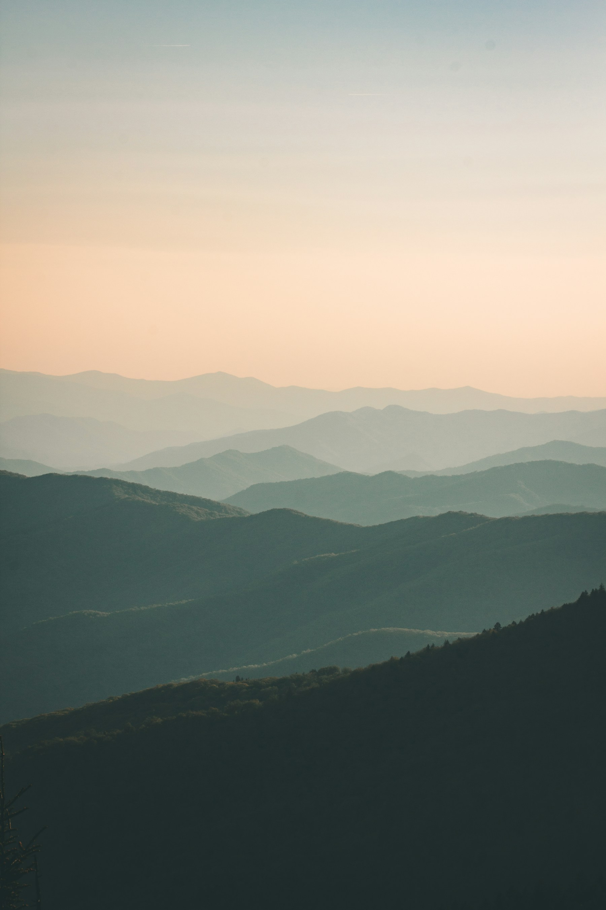

Opening
DAILY
FROM DAWN.
Public landscapes and main walking routes are open daily. Programmed spaces may follow event-specific times.
Visitor information
The practical details for a relaxed visit, whether you are coming for ten minutes or the whole day.

Opening
Public landscapes and main walking routes are open daily. Programmed spaces may follow event-specific times.
Getting here
Cycle parking and transit connections are prioritised near the principal entrances. Limited accessible parking is available.
Access
Primary paths use firm, step-free surfaces. Accessible restrooms, seating and water points are distributed across the park.
Dogs
Dogs are welcome on lead across most routes. Follow signs around play, meadow and habitat areas.
Before you go
General park access is free. Some small programmed events may require advance booking.
Yes. Use the provided bins or take waste home, and keep picnic setups clear of paths.
The park remains open unless conditions are unsafe. Event updates are shared on the relevant listing.